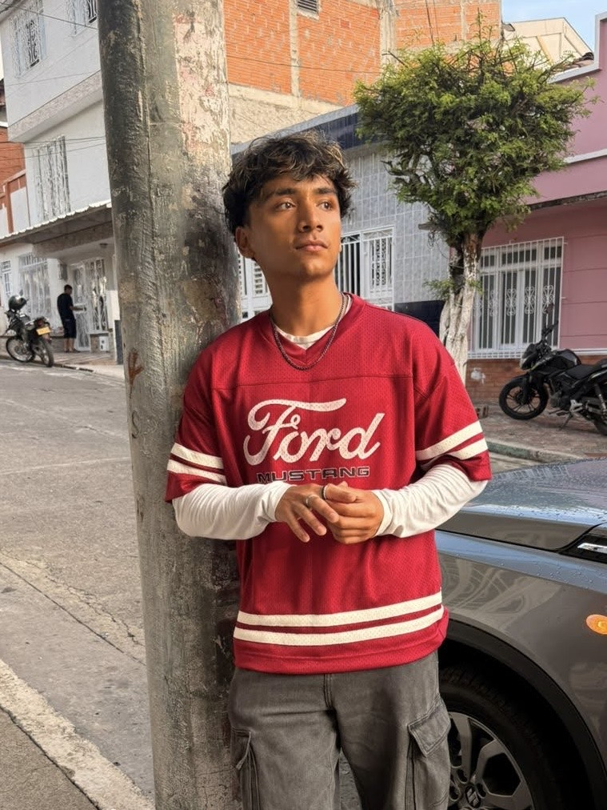
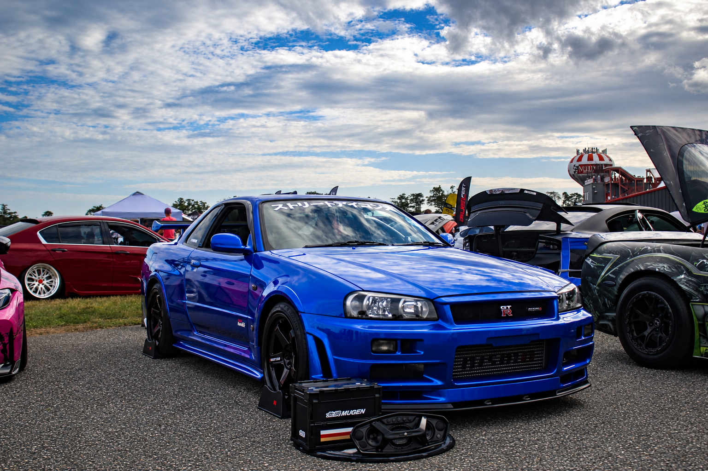
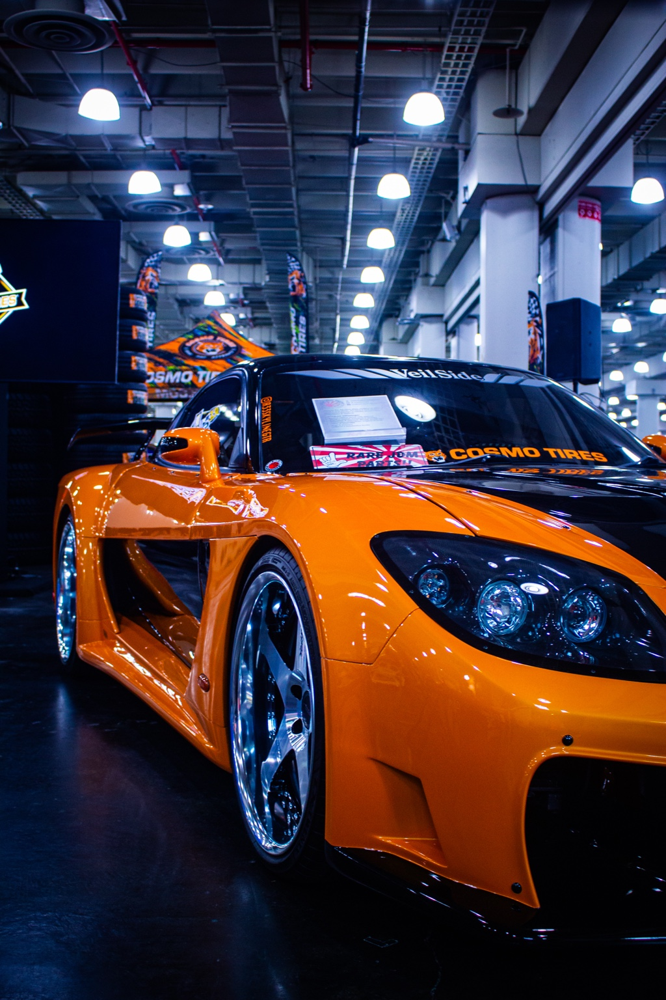
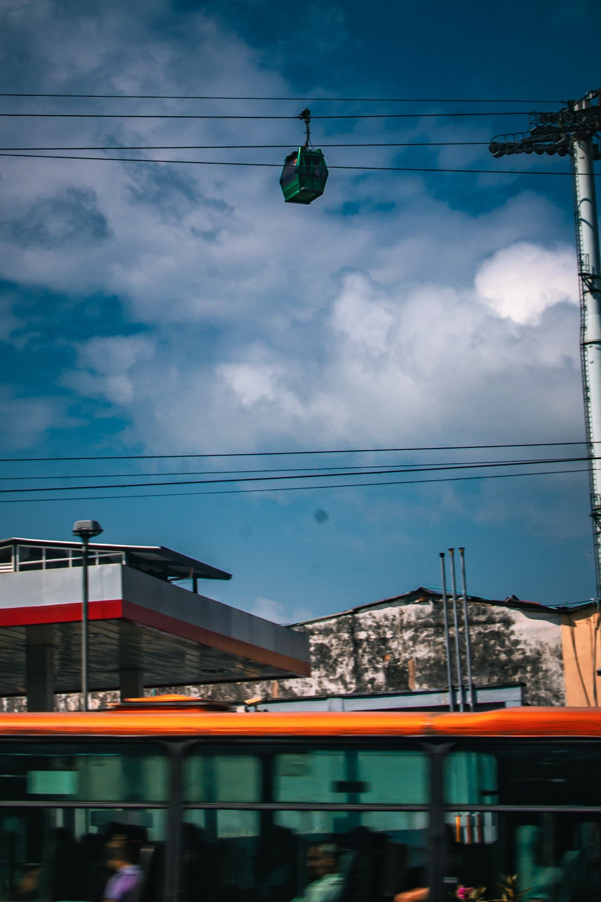

Hey, I'm Arriyn.
I'm an aspiring UX/UI designer who believes great design starts with understanding people.
My background in psychology has shaped how I approach design. I'm interested in understanding why people make certain decisions, how they interact with digital products, and how thoughtful design can make those experiences better.
I completed the UX/UI Design Bootcamp at BrainStation, where I developed hands-on experience in user research, wireframing, prototyping, and usability testing.
I enjoy combining research, creativity, and problem-solving to turn ideas into intuitive, meaningful digital experiences.

Designing with purpose.
To me, UX/UI design is more than making something visually appealing. It's about identifying real problems, listening to users, and designing solutions that feel natural and easy to use.
Whether I'm working on a mobile app or exploring game interfaces, I aim to create experiences that balance functionality, usability, and visual design.
Skills & Tools
Life Through My Lens.
Outside of design, I enjoy capturing the world through my lens. From automotive photography to everyday street scenes, photography gives me another way to explore creativity and perspective.



See what I've been designing.
Take a look at my UX/UI projects, design process, and case studies.
View My Projects →